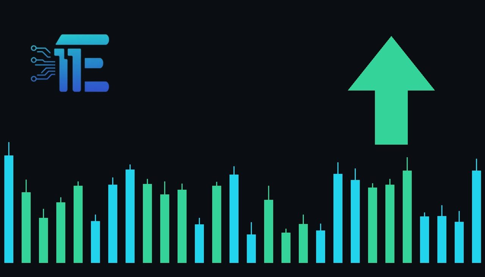

Gold Rebounds Above $3,900 as Dip Buyers Returnតម្លៃមាសងើបឡើងវិញលើសពី $3,900 ដោយសារកម្លាំងទិញត្រឡប់មកវិញ
XAU/USD impact: ▲ Bullishផលប៉ះពាល់លើ XAU/USD: ▲ ឡើង

Spot gold rebounded 0.8% to top $3,907 an ounce as buyers stepped in following an October slump. The move shows how bargain hunting can support gold even while the U.S. dollar index ticks higher.
តម្លៃ spot មាស បានងើបឡើង 0.8% ដល់ $3,907 ក្នុងមួយអោន ខណៈដែលអ្នកទិញបានវិលត្រឡប់មកវិញក្រោយការធ្លាក់ចុះក្នុងខែតុលា។ ចលនានេះបង្ហាញពីរបៀបដែលការទិញក្នុងតម្លៃទាបអាចគាំទ្រមាស បើទោះបីជាសន្ទស្សន៍ ដុល្លារអាមេរិក កើនឡើងបន្តិចក៏ដោយ។
Spot gold advanced 0.8% to trade at $3,907.17 an ounce, while U.S. gold futures rose 0.5% to reach $3,916.32. The turnaround followed a pronounced decline across the metal over the course of October, prompting dip buyers to re-enter the market. At the same time, the U.S. dollar Index showed modest gains, ticking up 0.1% to 101.93.
តម្លៃ spot មាស បានកើនឡើង 0.8% ដល់ $3,907.17 ក្នុងមួយអោន ខណៈដែលកិច្ចសន្យាអនាគតមាសនៅសហរដ្ឋអាមេរិកបានកើនឡើង 0.5% ដល់ $3,916.32។ ការងើបឡើងវិញនេះបានកើតឡើងបន្ទាប់ពីការធ្លាក់ចុះយ៉ាងខ្លាំងក្នុងអំឡុងខែតុលា ដែលបានជំរុញឱ្យអ្នកទិញក្នុងតម្លៃទាបចូលមកកាន់ ទីផ្សារ វិញ។ ក្នុងពេលជាមួយគ្នានេះ សន្ទស្សន៍ ដុល្លារអាមេរិក បានបង្ហាញការកើនឡើងបន្តិចបន្តួច 0.1% ដល់ 101.93។
The rebound illustrates that strong demand from dip buyers can lift gold prices even when the greenback remains firm. In standard market conditions, a firmer U.S. dollar makes dollar-priced bullion more expensive for foreign currency holders, exerting downward pressure on bullion. However, buying interest was strong enough to push gold higher alongside silver, which rallied 1.9% to $50.0630 an ounce.
ការងើបឡើងវិញនេះបង្ហាញថា តម្រូវការទិញដ៏រឹងមាំអាចជួយរុញច្រានតម្លៃមាសឱ្យឡើងថ្លៃ សូម្បីតែនៅពេល ដុល្លារអាមេរិក នៅតែរឹងមាំក៏ដោយ។ ក្នុងលក្ខខណ្ឌ ទីផ្សារ ធម្មតា ការឡើងថ្លៃនៃ ដុល្លារអាមេរិក ធ្វើឱ្យមាសដែលគិតជាប្រាក់ដុល្លារមានតម្លៃថ្លៃជាងមុនសម្រាប់អ្នកកាន់រូបិយប័ណ្ណផ្សេងទៀត ដែលជាទូទៅដាក់សម្ពាធលើលោហៈធាតុនេះ។ ទោះជាយ៉ាងណាក៏ដោយ កម្លាំងទិញមានកម្រិតខ្ពស់ល្មមដើម្បីរុញមាសឱ្យឡើងថ្លៃជាមួយប្រាក់ ដែលបានកើនឡើង 1.9% ដល់ $50.0630 ក្នុងមួយអោន។
Performance across the rest of the precious metals sector remained mixed. Platinum declined 3.4% to $1,434.65 an ounce, and spot palladium dropped 2.6% to $980.35, although palladium futures recorded a minor gain of 0.1% to $978.25. The split across metals reflects divergent sentiment, with gold and silver drawing dip-buying support while other industrial precious metals encountered selling.
ដំណើរការនៃលោហៈមានតម្លៃផ្សេងទៀតបានបង្ហាញលទ្ធផលចម្រុះ។ ផ្លាទីនបានធ្លាក់ចុះ 3.4% មកនៅត្រឹម $1,434.65 ក្នុងមួយអោន ហើយ spot ប៉ាឡាដ្យូមបានធ្លាក់ចុះ 2.6% មកនៅ $980.35 បើទោះបីជាកិច្ចសន្យាអនាគតប៉ាឡាដ្យូមបានកើនឡើងបន្តិច 0.1% ដល់ $978.25 ក៏ដោយ។ ភាពខុសគ្នានេះឆ្លុះបញ្ចាំងពីអារម្មណ៍ ទីផ្សារ ផ្សេងគ្នា ដោយមាសនិងប្រាក់ទទួលបានការទិញគាំទ្រ ខណៈដែលលោហៈឧស្សាហកម្មផ្សេងទៀតបានប្រឈមមុខនឹងការលក់ចេញ។
For XAU/USD market participants, the near-term path hinges on whether purchasing volume can outpace currency headwinds. If dip buyers continue to accumulate positions and dollar strength pauses, gold could maintain its upward traction. Conversely, if the U.S. dollar Index builds upon its advance past 101.93, a stronger currency could cap additional gains and revive selling pressure on bullion.
សម្រាប់អ្នកចូលរួមក្នុង ទីផ្សារ XAU/USD និន្នាការក្នុងរយៈពេលខ្លីអាស្រ័យលើថាតើបរិមាណទិញអាចទប់ទល់នឹងសម្ពាធនៃរូបិយប័ណ្ណបានឬទេ។ ប្រសិនបើអ្នកទិញបន្តប្រមូលទិញ ហើយការឡើងថ្លៃនៃប្រាក់ដុល្លារថមថយ មាសអាចរក្សាកម្លាំងងើបឡើងបន្តទៀត។ ផ្ទុយទៅវិញ ប្រសិនបើសន្ទស្សន៍ ដុល្លារអាមេរិក បន្តកើនឡើងលើសពី 101.93 កម្លាំងរូបិយប័ណ្ណដែលរឹងមាំអាចនឹងរារាំងការឡើងថ្លៃបន្ថែម និងបង្កើតសម្ពាធលក់លើមាសជាថ្មី។
Going forward, traders will observe whether the recent recovery in bullion can hold above key thresholds established during the October decline. Market participants will also monitor ongoing movements in the U.S. dollar Index and track whether silver's parallel rebound can provide continuing momentum for the precious metals complex.
ទៅមុខទៀត អ្នកជួញដូរ នឹងតាមដានថាតើការងើបឡើងវិញនៃមាសអាចរក្សាតម្លៃនៅពីលើកម្រិតសំខាន់ៗដែលបានបង្កើតឡើងក្នុងអំឡុងពេលធ្លាក់ចុះខែតុលាបានដែរឬទេ។ អ្នកចូលរួមក្នុង ទីផ្សារ ក៏នឹងតាមដានចលនានៃសន្ទស្សន៍ ដុល្លារអាមេរិក ព្រមទាំងការកើនឡើងនៃតម្លៃប្រាក់ដើម្បីបញ្ជាក់ពីនិរន្តរភាពនៃការងើបឡើងវិញនៃលោហៈមានតម្លៃទាំងមូល។
Key takeawaysចំណុចសំខាន់ៗ
- Spot gold rose 0.8% to $3,907.17, while U.S. gold futures gained 0.5% to $3,916.32.
- តម្លៃ spot មាស បានកើនឡើង 0.8% ដល់ $3,907.17 ហើយកិច្ចសន្យាអនាគតមាសអាមេរិកឡើង 0.5% ដល់ $3,916.32។
- Silver rallied 1.9% to $50.0630, while platinum and spot palladium posted notable declines.
- តម្លៃប្រាក់បានកើនឡើង 1.9% ដល់ $50.0630 ខណៈផ្លាទីននិង spot ប៉ាឡាដ្យូមបានធ្លាក់ចុះគួរឱ្យកត់សម្គាល់។
- The U.S. dollar Index edged up 0.1% to 101.93 alongside gold's rebound.
- សន្ទស្សន៍ ដុល្លារអាមេរិក បានកើនឡើងបន្តិចបន្តួច 0.1% ដល់ 101.93 ស្របពេលមាសងើបឡើងវិញ។
Original commentary by THE MARKET CODE, based on public reporting from Yahoo! Finance: GC=F News. Written with the help of AI. Educational only, not financial advice.
មតិវិភាគដើមដោយ THE MARKET CODE ផ្អែកលើការរាយការណ៍សាធារណៈពី Yahoo! Finance: GC=F News។ សរសេរដោយមានជំនួយពី AI។ មាតិកាអប់រំប៉ុណ្ណោះ មិនមែនជាដំបូន្មានហិរញ្ញវត្ថុទេ។